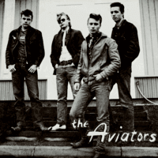

the Aviators - Only One Thing / Lover Please (Single, 2007)
01 - Only One Thing (2007 Remaster) (2:13)
02 - Lover Please (2007 Remaster) (2:04)
© Poko Rekords 1987 :: [PIS 087] © Poko Rekords Oy 2007 :: [Digital]
Notes
Finland.
My experience is based on Digital release of Remastered records (2007). Original release is dated to 1987
First track "Only One Thing" is credited to Jali Tuhkunen. Second track "Lover Please" is credited to Billy Swan
reference information: Discogs®
Review
104/366 (Project 366)
Striking start of the first song "Only One Thing" gives way to moderate pace. The composition is melodious, with a smooth guitar accompaniment. Drums and bass are also quite well flowing ones. Rock and Roll with sixties mood, perhaps. Tune is dreamy and vocals are even more. In general, a pretty and easygoing song. Second track "Lover Please" is more energetic and driving, with lovely musical arrangement and slightly twistin' mood. Shaking your sensations and entertain you by lively melody and quite thoughtful love lyrics. The song is filled with the mood of expectation that everything will be fine, without despair, in great reliance. And just the tune is catchy. Very invigorates. Simple and easy.
Rock'n'Roll with pop sound and delightful voices. With the influence of Rockabilly Revival, Pop Rock, Country and youth dreaminess - both songs sound curious. I did not hear the original recordings (1987), but I think that remastering made the tracks more clear and fancy.
Soft rockin' and rollin' flyaway.